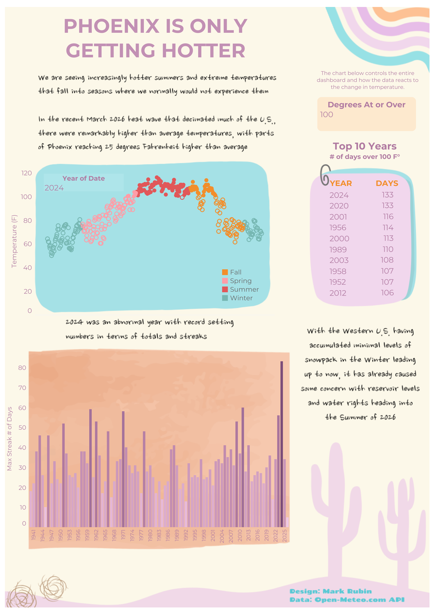

Phoenix is Only Getting Hotter
An interactive infographic — 85 years of Phoenix heat, designed to be felt as much as read
View Dashboard →
The Design Intent
Most climate charts look like climate charts — grey axes, dense labels, a trend line you have to squint at. This one doesn't. Built on a warm cream background with a pastel palette pulled from a desert sunrise — teal, coral, lavender, soft orange — the infographic is designed to feel like something worth reading before a single number registers. The illustrated cactus silhouette and wavy ribbon motif in the corner anchor it visually in Phoenix without saying a word.
The goal was to build something that a resident, a journalist, or a policymaker could hand to someone who doesn't follow climate data and have them immediately understand what they're looking at.
The Interactive Core
The centerpiece of the dashboard is a degree counter — a single control that filters every element on the page simultaneously. Dial it from 90°F to 130°F and watch the seasonal scatter plot, the Top 10 years table, and the 85-year streak bar chart all respond at once. It transforms what could be a static summary into something you explore.
Seasonal Scatter Plot
Each dot is a single day's high temperature, colored by season — teal for winter, red/coral for summer, orange for fall, and pink/salmon for spring. The degree counter does something clever here: dots that meet or exceed the selected threshold become filled, while days below it remain hollow outlines. As you raise the threshold, the filled dots retreat toward the peak of summer — but lower it to 100°F and watch what happens to the shoulders of the year. Filled dots start appearing in spring and fall, seasons that historically never reached those temperatures. That bleed — heat pushing into months it doesn't belong in — is the most unsettling thing the scatter plot reveals.
Top 10 Years Table
As you move the degree counter, the table updates to show which years logged the most days at or above that threshold. It's a leaderboard that reshuffles depending on what kind of heat you're asking about — and no matter where you set it, recent years keep rising to the top. The occasional mid-century outlier reminds you this isn't new, but the pattern of who dominates is unmistakable.
85-Year Streak Bar Chart
From 1941 to 2025, each bar represents the longest consecutive run of days above the selected threshold in that year. The pattern is clear: more recent years stack taller, the variation narrows, and the baseline creeps upward decade by decade. 2024 stands as a structural outlier — a record that resets expectations for what a Phoenix summer looks like going forward.
In 2024, Phoenix hit 100°F or higher for 133 days. The streaks are longer, the records keep falling, and the recent years dominate every leaderboard. This isn't a trend — it's the new baseline.
Design & Color System
Warm cream background, teal for cool/winter data, coral and lavender for summer and interactive elements. The palette evokes a desert morning — familiar to Phoenix residents, approachable to everyone else.
A bold serif display font for the title creates editorial weight. Supporting text stays clean and light, keeping the emphasis on the data and the illustrated elements rather than the labels.
A saguaro cactus silhouette and wavy ribbon motif ground the dashboard geographically without the need for a map. It's immediately legible as Phoenix, Arizona.
Asymmetric two-column layout balances the data-dense scatter plot and bar chart against the calmer top-10 table and narrative text panels, preventing visual overload.
Challenges & Solutions
Custom Fonts in Tableau Public
Tableau Public doesn't support custom fonts — only web-safe fonts render correctly once a workbook is published. This meant the custom brush typography and decorative lettering in the infographic's title and design elements couldn't be produced inside Tableau directly. The workaround was to build those elements in Canva, where any font is available, and incorporate them as part of the overall design. The charts, labels, and all interactive pieces use web-safe fonts within Tableau as intended.
Behind the Data
Data Pipeline
A Python script calls the Open-Meteo historical weather API to fetch every daily maximum temperature recorded at Phoenix Sky Harbor since January 1, 1940. For each year and each degree threshold (90°F–130°F), the script computes the longest consecutive streak of days at or above that temperature. The result is two clean CSVs — one of raw daily temps, one of annual streak data — ready for Tableau.
The script uses today's date as its end point automatically, so re-running it always produces a current dataset. A --skip-fetch flag skips the API call and recomputes streaks from the existing CSV, useful for testing without hitting rate limits.
Data Sources
Open-Meteo Historical Weather API
Source: Open-Meteo.com
Station: Phoenix Sky Harbor International Airport (33.4373°N, 112.0078°W)
Variable: Daily maximum temperature (°F), 2m height
Coverage: January 1, 1940 – present (auto-updates on each run)
Timezone: America/Phoenix (no daylight saving)